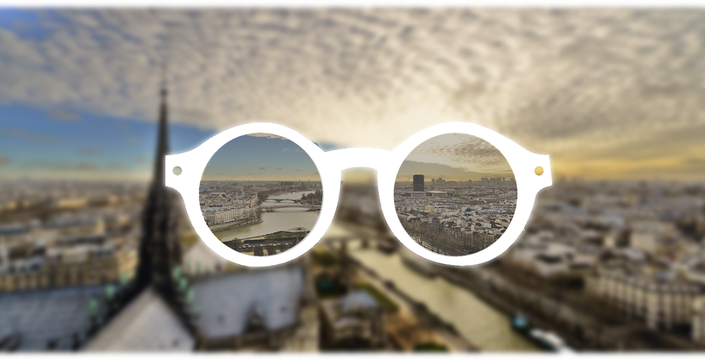

<div class="page product">
    <div class="page-container">
        <section class="hero">
            <div class="img-overlay">
                <div class="row">
                    <div class="col-md-3 col-md-offset-1 title">
                        Les verres QOS plus
                    </div>
                </div>
                <div class="row">
                    <div class="col-md-3 col-md-offset-9 block">
                        <p>
                            QOS PLUS distribue une large gamme de lentilles de contact journalières et mensuelles provenant des plus grands laboratoires et distribuera sa propre marque en 2015.
                        </p>
                    </div>
                </div>
                <div class="row center">
                    <div class="col-md-2 col-md-offset-4">
                        Une gamme de
                    </div>
                    <div class="col-md-2 col-md-offset-1">
                        produits uniques
                    </div>
                </div>
                <div class="row">
                    <div class="col-md-3 block">
                        <p>
                            QOS PLUS distribue une large gamme de lentilles de contact journalières et mensuelles provenant des plus grands laboratoires et distribuera sa propre marque en 2015.
                        </p>
                    </div>
                </div>
            </div>
            
        </section>
        <section class="product-content">
            <div class="row">
                <div class="col-md-10 col-md-offset-1">
                    <div class="row border-bottom">
                        <div class="col-md-4 bordered top">
                            <h5>Les lentilles </h5>
                            <h5><span>QOS Plus</span></h5>
                        </div>
                    </div>
                    <div class="row">
                        <div class="col-md-4 col-md-offset-8 bordered bottom">
                            <p>QOS PLUS distribue une large gamme de verres proposant ainsi tout type de corrections pour un confort visuel optimal.</p>
                            <p>- Verres unifocaux<br>
                            - Indices du 150 au 174<br>
                            - Traitements garantis : durci, antireflet, hydrophobe, antistatique, photochromique (Transition signature VII) , achromatique<br>
                            - Verres free form individualisés en unifocal et progressif pour un résultat exceptionnel tant sur le plan du confort visuel que du rendu esthétique<br>
                            - Technique de façonnage point par point permettant une optimisation de la surface du verre.<br>
                            - Verres mi-distance personnalisés free form<br>
                            - Produits spécifiques ie 174 transition, Signature VII ou miroir OR</p>
                        </div>
                    </div>
                </div>
            </div>
        </section>
    </div>
</div>